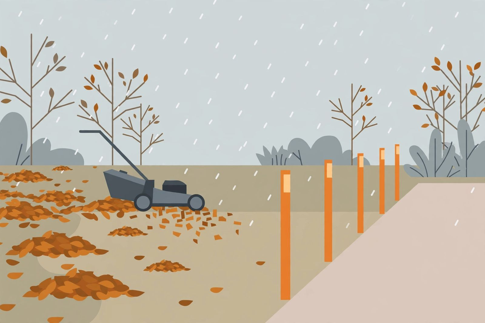

The last yard pass before snow sticks: a 90 minute triage in the right order

Do the buried jobs first, the frozen ground jobs second, and the reach jobs last. That single ordering rule turns a scattered Saturday of late fall chores into one 90 minute pass that actually protects the yard, because lasting snow does not treat every unfinished job equally. Some jobs become impossible under snow, some become damaging under snow, and some simply wait until spring at no cost at all. The pass below sorts a typical yard into those three groups and runs them in order.
Difficulty: easy to moderate; every step is hand tool work at ground level. Time: about 90 minutes for a typical suburban yard. Hire a pro line: gutter and roof work beyond safe reach from the ground, and any tree limb over a roof, driveway or walkway, belong to a professional; this pass stays on the ground on purpose.
First: the leaf decision, with the see the grass test
Leaves are the one job where waiting changes the outcome rather than the schedule. A thick layer of whole leaves left on the lawn blocks light, traps moisture against turf heading into dormancy, and shelters mice and voles tunnelling under the snow. Under lasting snow cover, soggy leaf piles also set up snow mold, a lawn fungus that announces itself at melt as matted gray or pink patches sitting exactly where the leaves spent the winter.
The decision rule comes from Colorado State University Extension guidance: mulch mowing is the right tool only while the layer is light enough for the mower to chop the leaves small and let them filter down into the turf. The test is visual and takes five seconds. After a pass or two with the mower set high, can grass still be seen through the chopped leaves? If yes, the layer is thin enough to leave. If no green shows, the excess gets raked or collected and moved to beds or compost. Whole leaves should not sit on the lawn, and leaf litter left in place invites the disease and matting problems named above.
Two settings complete the lawn part of the pass. Keep mowing at the normal recommended height until the grass stops growing, and resist the old advice to scalp the final cut: CSU recommends 2.5 to 3 inches year round and states there is no need to mow shorter in fall, while Iowa State University Extension guidance adds the same no scalping rule, plus restraint with fall nitrogen and thatch kept to half an inch or less. Long, floppy grass mats down under snow and stays damp; scalped grass goes into winter stressed. The ordinary height, kept ordinary, is the target.
Work dry leaves on a dry afternoon where the forecast allows it. Wet, frozen leaves are far harder to move than the same leaves handled a week earlier, and that gap is the entire argument for doing this section first rather than last.
Second: ground jobs before the freeze
Frozen ground refuses work politely and completely. Anything that needs to enter the soil, grip the soil, or be judged against unfrozen soil belongs in this block, while the ground still accepts it.
- Edge markers. Driveway and walkway edge markers go in before the ground freezes, while a mallet still seats them with two taps instead of twenty. Placed now, they outline the pavement for the first storm rather than the third.
- The final leaf and debris sweep of beds and corners. Spent annuals that finished at the first hard frost can be pulled now; sturdy seed heads can stay standing for birds and winter structure. The rule is selective, tidy along the paths, looser in the back corners.
- Winter mulch, timed to the freeze, not the calendar. Winter mulch of about 2 to 4 inches of shredded bark or chopped leaves steadies soil temperature through freeze and thaw cycles that can heave young perennials out of the ground. Extension timing puts the application after the top layer of ground has frozen, not before. On a mid November pass in a mild spell, stage the mulch where it will be used and apply it once the surface firms up, rather than blanketing warm soil early.
Third: reach and path jobs
The last block is about the first storm morning, not the soil. None of these jobs damage anything by waiting a week; all of them punish waiting until the snow is already falling.
- Disconnect every garden hose. A connected hose traps water in the faucet and pipe, and frozen, expanding water is how a fitting becomes a leak or a burst pipe. Drain the hoses and store them, the full faucet and sprinkler sequence lives in the winterizing guide on this site.
- Move winter tools to the front. Snow shovel and ice melt come to the front of the garage or shed, and summer tools move back in the same motion. The swap takes minutes now and saves a climb over stored furniture in the dark at 6 in the morning.
- Clear what can be reached safely. Leaves and debris come out of gutters and downspout mouths where they can be reached safely, and downspouts get confirmed to direct water away from the house. Anything beyond safe ground reach is noted and booked, not improvised.
- Spread future snow piles out in the plan. Iowa State guidance for snow mold includes a winter habit worth deciding now: spread big piles out rather than dumping every shovelful on one lawn spot, so piles melt faster and sit on the turf for less time.
What waits until spring, on purpose
A triage pass earns its name as much by what it refuses as by what it runs. Leave these alone: spring pruning decisions, lawn repair and overseeding of any bare patch discovered today, and fungicide thinking for snow mold. CSU guidance is direct that fungicides are not recommended for gray snow mold and spring fungicide will not fix it; if patches appear at melt, recovery is a gentle raking to dry and lift the matted grass, a light spring feeding, and core aeration with overseeding only where recovery stalls. Noting a weak area today, in a phone note with a photo, is the correct November action. Treating it is a spring job, and doing spring jobs in November mostly spends money in the wrong season.
The pass, timed
- Minutes 0 to 35, leaves. Mulch mow the light areas, apply the see the grass test after two passes, rake and relocate the excess where no green shows. Success check: grass visible through chopped leaves everywhere, no whole leaf mats remaining.
- Minutes 35 to 50, final cut and lawn set. Mow at the normal height if grass is still growing, no scalping, and clear clippings and leaf grindings off paths and the driveway. Success check: even height, hard surfaces swept.
- Minutes 50 to 65, ground jobs. Seat the edge markers, pull spent annuals along the paths, stage winter mulch for application once the surface freezes. Success check: markers firm with a hand pull, mulch staged off the lawn.
- Minutes 65 to 85, reach and path. Disconnect and drain hoses, swap the garage order so shovel and ice melt sit at the front, clear reachable gutter mouths and confirm downspout direction. Success check: shovel reachable in the dark without moving anything.
- Minutes 85 to 90, the spring note. Walk the yard once, photograph any weak lawn or suspect limb, and note anything that needs a professional or a spring decision. Success check: every deferred job exists as a note, not as a worry.
What success looks like: snow can arrive tonight and find nothing buried that mattered, nothing frozen out that was needed, and a shovel standing where a hand lands on it first try.
— Tom Reilly, Home & DIY Writer